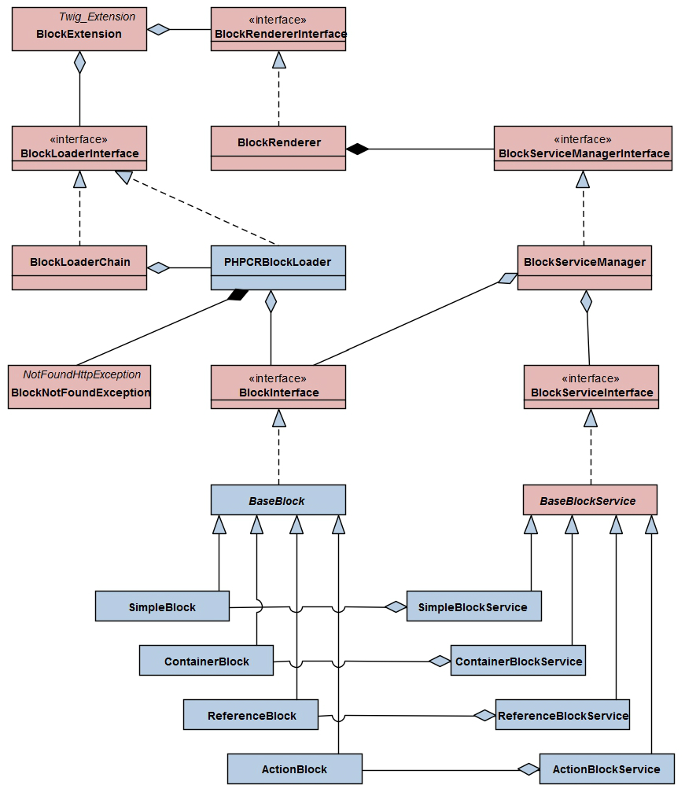

El BlockBundle proporciona integración con SonataBlockBundle. Este te asiste gestionando fragmentos de contenido, conocidos como bloques. Lo que hace BlockBundle es similar a lo que hace Twig, pero para bloques almacenados en una BD. De esta manera, un editor puede modificar los bloques. Además, el BlockBundle proporciona la lógica para determinar qué bloque se tendría que dibujar en cuáles páginas.
El BlockBundle por sí mismo no proporciona una funcionalidad de edición para bloques. No obstante, puedes encontrar ejemplos de cómo hacer editables los bloques en el recinto de seguridad del CMF de Symfony.
Este paquete está basado en el SonataBlockBundle
La clave de configuración para este paquete es symfony_cmf_block
# app/config/config.yml
symfony_cmf_block:
document_manager_name: default
Antes de que puedas dibujar un bloque, necesitas crear un objeto que represente los datos de tu bloque en el repositorio. Lo puedes conseguir con el siguiente fragmento de código (ten en cuenta que $parentPage necesita ser una instancia de una página definida por el ContentBundle):
$myBlock = new SimpleBlock();
$myBlock->setParentDocument($parentPage);
$myBlock->setName('sidebarBlock');
$myBlock->setTitle('My first block');
$myBlock->setContent('Hello block world!');
$documentManager->persist($myBlock);
Ten en cuenta que el sidebarBlock es el identificador que escogimos para el bloque. Junto con el documento padre del bloque, esto hace único al bloque. Las otras propiedades son específicas a Simpleblock. Ahora para realmente dibujar este bloque, justo añade el siguiente código a tu plantilla de Twig:
{{ sonata_block_render({'name': 'sidebarBlock'}) }}
Esto hará que se dibuje el BlockBundle según el bloque en cada página que tenga un bloque llamado 'sidebarBlock'. Naturalmente, es necesario que la página real sea reproducida por la plantilla que contiene el fragmento anterior.
Digamos que estás trabajando en un proyecto donde tienes que integrar los datos recibidos de varios alimentadores RSS. Por supuesto podrías crear un ActionBlock para cada uno de estos alimentadores, ¿pero no es tonto esto? De hecho todas estas acciones se verían similares: Recibes los datos desde un alimentador, los saneas y pasas los datos a una plantilla. De este modo decides crear tu propio bloque, el RSSBlock.
Lo primero que necesitas es una entidad que contenga los datos. Es recomendable extender el contenido desde el BaseBlock de este paquete (aun así no es forzoso hacerlo, siempre y cuando implementes la Sonata\BlockBundle\Model\BlockInterface). En tu entidad, añades dos propiedades, 'feedURL' y 'templateName', así como captadores y definidores para ellas. Además, necesitas definir el método getType que sólo regresa el 'my_bundle.block.rss'.
La segunda cosa necesaria es un servicio que RSSBlocks sabe cómo manejar. En el caso del RSSBlock sería esto: Recuperar los datos desde dónde estén almacenados en 'feedURL', sanearlos, y pasarlos a la plantilla almacenada en 'templateName'. De nuevo, puedes extender el Sonata\BlockBundle\Block\BaseBlockService. Es importante, denominar la propiedad 'name' del servicio 'my_bundle.block.rss' (Esto garantiza que se pueda encontrar la relación entre la entidad y el servicio).
La última cosa que necesitas para definir el servicio es un archivo config. Es importante etiquetar tu BlockService con 'sonata.block', de lo contrario no lo reconocerá el paquete.
Puedes encontrar ejemplos de uso de este paquete en el Recinto de seguridad del CMF de Symfony. Dale un vistazo en el BlockBundle del recinto de seguridad. También te muestra cómo hacer editables los bloques usando el CreateBundle.
El BlockBundle está basado en el SonataBlockBundle. Este reemplaza componentes del paquete dónde sea necesario que sea compatible con PHPCR.
La siguiente imagen muestra dónde utilizamos nuestros propios componentes (azules):
